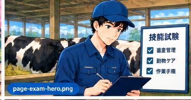

Selain bahasa Jepang, kamu wajib lulus ujian keterampilan peternakan via Prometric. Ini panduan lengkapnya — dari materi, cara daftar, sampai contoh soal interaktif.

Sebelum belajar, pahami dulu apa yang diuji dan bagaimana formatnya. Biar belajarnya lebih terarah.
Ujian resmi yang diselenggarakan oleh 全国農業会議所 (NCA / National Chamber of Agriculture) Jepang untuk menilai keterampilan calon pekerja SSW sektor peternakan. Diselenggarakan via Prometric di berbagai kota Indonesia.
Kabar baiknya: soal keterampilan bisa dikerjakan dalam Bahasa Indonesia! Hanya bagian Choukai (mendengarkan instruksi kerja) yang tetap dalam Bahasa Jepang.
Ujian komputer di pusat Prometric. Tidak ada kertas, semua dijawab lewat mouse atau layar sentuh.
Banyak soal disertai foto hewan, alat, atau situasi kandang. Sangat membantu yang belum fasih membaca kanji.
Durasi ujian sekitar 60 menit. Tidak terlalu panjang, tapi butuh fokus penuh dari awal sampai akhir.
Tidak lulus? Langsung daftar lagi. Tidak ada batas maksimal percobaan. Banyak yang lulus di percobaan ke-2 atau ke-3.
Ini yang sering tidak diketahui banyak orang. Ujian keterampilan peternakan SSW punya dua bagian dengan ketentuan bahasa yang berbeda.
Soal-soal tentang pengetahuan dan keterampilan peternakan (manajemen pakan, sanitasi kandang, kesehatan hewan, keselamatan kerja) tersedia dalam Bahasa Indonesia. Kamu bisa memilih bahasa saat mendaftar ujian di situs Prometric.
Bagian Choukai menguji kemampuanmu memahami instruksi kerja sehari-hari di peternakan Jepang yang disampaikan dalam Bahasa Jepang. Ini bagian yang wajib dipersiapkan secara khusus karena tidak bisa diganti ke bahasa lain.
Contoh soal Choukai: mendengar instruksi seperti "Sapi di kandang B belum diberi makan pagi ini" lalu menjawab pertanyaan tentangnya.
📚 Pelajari kosakata kerja peternakan dalam Bahasa JepangMeski soal keterampilan bisa dalam Bahasa Indonesia, bagian Choukai tetap 100% Bahasa Jepang dan tidak bisa dilewati. Pastikan kamu sudah belajar kosakata instruksi kerja peternakan dalam Bahasa Jepang sebelum ujian. Materi belajar Choukai tersedia gratis di situs resmi NCA (asat-nca.jp) dalam Bahasa Indonesia.
Ujian mencakup pengetahuan dasar pemeliharaan 3 jenis hewan ternak utama. Pilih jenismu dan pelajari materinya.
Setelah matching dengan perusahaan Jepang, kamu sudah tahu akan kerja di peternakan sapi, babi, atau unggas. Fokuskan belajar ke kategori itu. Soal ujian disesuaikan dengan bidang yang kamu daftar.
Bagian tubuh sapi, sistem pencernaan ruminansia (lambung 4 ruang), siklus reproduksi, dan tanda-tanda sapi sehat vs sakit.
Pengetahuan dasarJenis hijauan, konsentrat, dan mineral untuk sapi. Cara menghitung kebutuhan pakan harian. Jadwal dan teknik pemberian pakan yang benar.
Pakan ternakStandar kebersihan kandang gaya Jepang, cara membersihkan kandang, pengelolaan kotoran (feses & urin), dan sanitasi peralatan.
SanitasiTanda-tanda penyakit umum pada sapi, protokol biosekuriti (desinfeksi, pakaian pelindung), dan kapan harus lapor ke dokter hewan.
Kesehatan ternakProsedur pemerahan manual dan mesin, standar kebersihan susu, perawatan puting, dan jadwal pemerahan.
Sapi perahAPD yang wajib dipakai, cara aman mendekati dan menangani sapi, prosedur darurat jika ada insiden, dan aturan K3 standar Jepang.
SafetyBagian tubuh babi, siklus reproduksi (estrus, gestasi, laktasi), fase pertumbuhan dari piglet hingga dewasa, dan identifikasi jenis kelamin.
Pengetahuan dasarPerbedaan pakan untuk piglet, grower, finisher, dan induk. Teknik pemberian pakan (manual vs otomatis), dan manajemen air minum.
Pakan ternakDesain kandang per fase produksi, ventilasi dan suhu ideal, pembersihan kandang, dan pengelolaan limbah (slurry) yang ramah lingkungan.
KandangGejala penyakit umum (demam, diare, gangguan pernapasan), program vaksinasi, dan protokol biosekuriti ketat untuk peternakan babi.
Kesehatan ternakDeteksi birahi (estrus), inseminasi buatan, perawatan induk bunting, persiapan farrowing, dan penanganan piglet baru lahir.
ReproduksiCara aman memindahkan dan menangani babi, penggunaan sorting board, APD wajib, dan prosedur darurat di peternakan babi.
SafetyAnatomi ayam/bebek, siklus produksi telur, fase pertumbuhan broiler (DOC hingga panen), dan perbedaan layer vs broiler.
Pengetahuan dasarJenis pakan per fase (starter, grower, finisher, layer), pengoperasian feeding line otomatis, dan manajemen nipple drinker.
PakanSistem kandang closed house vs open house, kontrol ventilasi dan suhu, manajemen litter (sekam), dan pembersihan antar periode.
KandangProtokol biosekuriti ketat (AI/Flu Burung), program vaksinasi, deteksi kematian dini, dan prosedur disposal ayam mati.
BiosekuritiProsedur pemanenan telur yang higienis, grading telur, penanganan dan penyimpanan, serta standar kualitas telur Jepang.
ProduksiAPD khusus unggas (masker respirator, baju hazmat), cara aman menangani ayam dalam jumlah besar, dan protokol jika ada wabah.
SafetySoal-soal berikut menggambarkan format dan tingkat kesulitan ujian Prometric peternakan. Jawab dan lihat langsung penjelasannya!
Format persis Prometric: timer 60 menit, peta soal, tandai ragu-ragu, sampai skor akhir & pembahasan lengkap. Passing score 70%.
Prosesnya online dan tidak rumit. Ikuti langkah ini dan kamu siap terdaftar.
Kunjungi situs pendaftaran ujian keterampilan peternakan SSW yang dikelola oleh JACCAS (Japan Agricultural Contractors and Consultants Association). Pastikan kamu buka situs resminya, bukan yang abal-abal.
🌐 Buka jaccas.jp →Daftarkan diri dengan email aktif. Isi data sesuai passport: nama lengkap, nomor paspor, tanggal lahir, dan nomor WA aktif. Pastikan semua data akurat karena dipakai untuk verifikasi di hari ujian.
Pilih kategori yang sesuai dengan rencana kerjamu (sapi perah, sapi potong, babi, atau unggas). Kemudian pilih kota dan tanggal ujian yang tersedia. Jadwal tersedia di berbagai kota besar Indonesia.
Lakukan pembayaran biaya ujian sekitar Rp 500.000 – 800.000 sesuai instruksi di situs. Simpan bukti pembayaran dengan baik.
Kamu akan menerima email konfirmasi dengan detail lokasi, waktu, dan nomor ujianmu. Simpan dan print konfirmasi ini untuk dibawa ke lokasi ujian.
Jakarta, Surabaya, Medan, Makassar, Bandung, Semarang, dan kota lain. Terus bertambah setiap tahunnya.
Biaya resmi yang dibayarkan ke Prometric. Cek situs resmi untuk harga terkini karena bisa berubah.
Langsung daftar ulang untuk jadwal berikutnya. Tidak ada masa tunggu wajib dan tidak ada batas percobaan.
Tips dari mereka yang sudah pernah ikut ujian ini. Simple tapi efektif.
Sebagian besar soal punya foto pendukung. Latih diri untuk membaca situasi dari gambar, bukan hanya mengandalkan teks. Ini sangat membantu meski bahasa Jepangmu masih terbatas.
Ada sekitar 100–150 kosakata teknis peternakan yang sering muncul. Hafal ini dulu sebelum belajar materi panjang. Contoh: 飼料 (shiryo = pakan), 牛舎 (gyusha = kandang sapi).
Jangan belajar semua kategori sekaligus. Jika sudah tahu akan kerja di peternakan sapi, fokus 80% waktu belajarmu ke materi sapi. Ini jauh lebih efisien.
Pola soal ujian Prometric cukup konsisten dari tahun ke tahun. Semakin banyak latihan soal yang kamu kerjakan, semakin familiar kamu dengan cara soal disusun.
YouTube punya banyak video peternakan berbahasa Jepang yang sangat visual. Ini cara belajar yang menyenangkan sekaligus melatih listening dan kosakata teknis peternakan secara bersamaan.
Jangan belajar sampai larut malam sehari sebelum ujian. Otak yang lelah lebih lambat memproses soal. Tidur 7–8 jam dan sarapan pagi di hari H jauh lebih penting dari hafalan terakhir.
Centang satu per satu. Kalau semua sudah hijau, kamu siap berangkat ujian!
Semua informasi di halaman ini bersumber dari lembaga resmi pemerintah Jepang dan penyelenggara ujian. Cek langsung untuk data terbaru.
Situs resmi ujian keterampilan pertanian dan peternakan SSW yang dikelola langsung oleh 全国農業会議所 (NCA). Tersedia dalam Bahasa Indonesia. Berisi info ujian, jadwal, materi belajar gratis, dan link pendaftaran.
🔗 asat-nca.jp/asat1 →Halaman resmi Prometric Jepang untuk pendaftaran dan info ujian ASAT Level 1 (SSW-1). Berisi negara yang tersedia, prosedur pendaftaran, dan link langsung ke sistem reservasi.
🔗 prometric-jp.com →Halaman resmi program SSW dari Immigration Services Agency of Japan. Berisi persyaratan resmi, jenis pekerjaan yang diperbolehkan, dan informasi visa SSW sektor pertanian dan peternakan.
🔗 ssw.go.jp →NCA menyediakan buku teks belajar resmi ujian ASAT secara gratis, termasuk versi Bahasa Indonesia untuk materi peternakan (畜産農業) dan materi belajar Choukai (bahasa Jepang untuk kerja).
🔗 asat-nca.jp/asat1/textbook →Halaman resmi NCA tentang program dukungan penerimaan pekerja asing di sektor pertanian Jepang. Berisi detail bahasa yang tersedia, syarat ujian, dan link ke semua materi resmi.
🔗 nca.or.jp →Pedoman operasional resmi dari Badan Imigrasi Jepang (Immigration Services Agency) untuk program SSW sektor pertanian. Dokumen hukum yang menjadi dasar seluruh aturan program ini.
🔗 moj.go.jp/isa →Pelajari sistem SSW secara lengkap atau simulasikan gaji yang akan kamu terima setelah lulus.